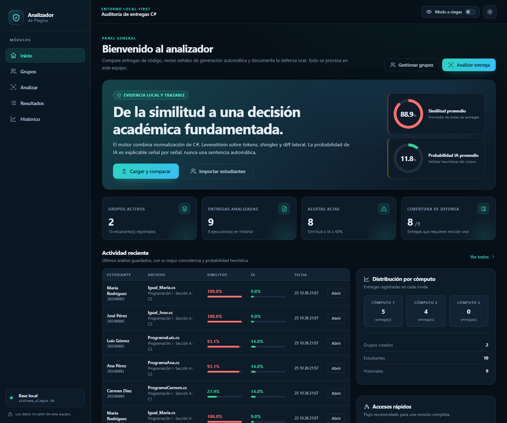
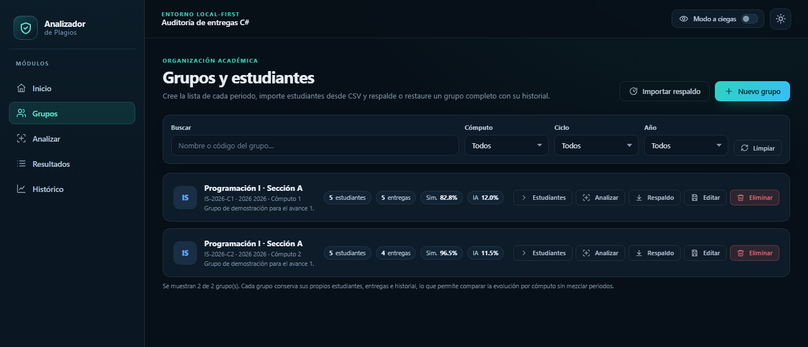
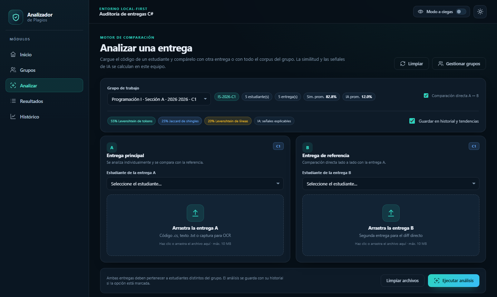
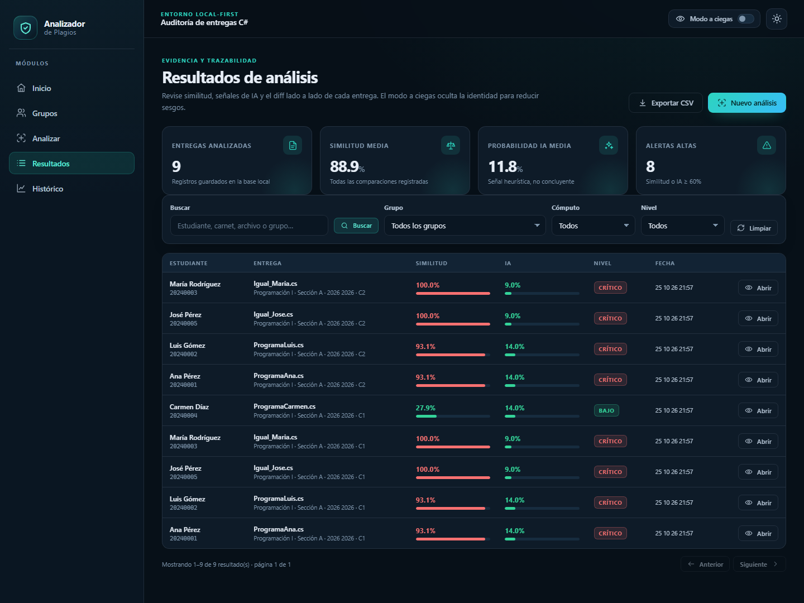
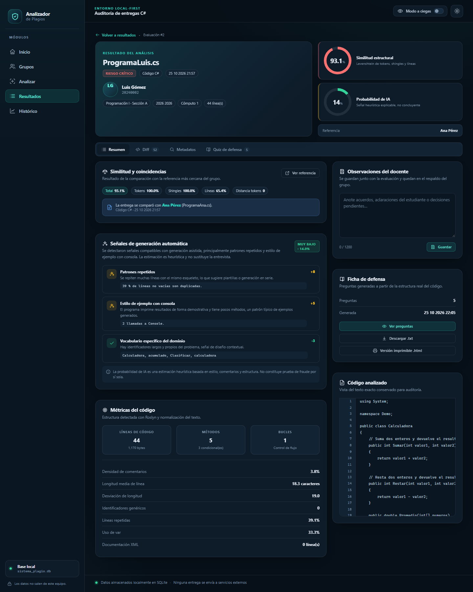
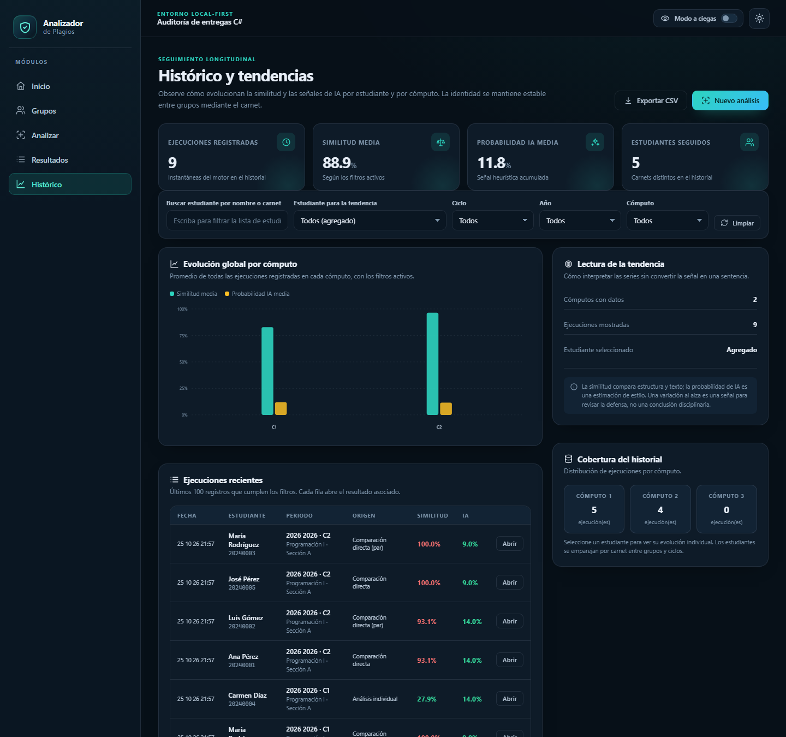

De la similitud a una decisión académica fundamentada.
Aplicación web local para organizar grupos, comparar entregas, revisar señales de generación automática y documentar la defensa oral sin enviar datos a la nube.
Una herramienta de apoyo a la revisión académica: conserva la evidencia, ordena el análisis y deja la decisión final en manos del docente.
Nombre del proyecto
Analizador de Plagios para Entregas de Código C#
Auditoría local-first de similitud y asistencia en código académico.
El problema
Revisar decenas de entregas de programación a mano es lento y difícil de justificar. Dos archivos pueden verse distintos y conservar la misma estructura; además, el código asistido por IA mezcla estilo, comentarios y patrones que no siempre se ven a simple vista. El docente necesita evidencia trazable, no una acusación automática.
Qué hace la aplicación
Organiza grupos y estudiantes por año, ciclo y cómputo; importa listas desde CSV; compara entregas .cs, texto o capturas de pantalla; calcula similitud estructural; muestra un diff lado a lado; agrega señales explicables de generación automática; genera una ficha de defensa oral; guarda observaciones y permite comparar la evolución entre periodos.
Valor para el usuario
Menos revisión repetitiva: prioriza las entregas que requieren atención y conserva la referencia de cada comparación.
Decisiones defendibles: cada porcentaje viene con desglose, diff, metadatos y preguntas de defensa.
Menos sesgo: el modo a ciegas oculta nombres y carnets mientras se revisa la evidencia.
Privacidad por diseño: la base SQLite, los archivos y el historial permanecen en el equipo local.
Alcance de este avance
Seis pantallas principales: Inicio, Grupos, Analizar, Resultados, Detalle e Histórico. Incluye importación CSV, respaldo/restauración de grupos, OCR para capturas, comparación directa o contra el corpus, ficha de defensa y exportación CSV. No incluye integración con LMS, autenticación multiusuario ni sanción automática.
NombrePortada y ficha · 01
DescripciónProblema, alcance y valor · 02
Pantallas + lógicaSeis recorridos · 03–09
Base de datos 3FNDiagrama y diccionario · 10–11
ArquitecturaCapas y stack · 12–13
Analizador de Plagios · Avance 1Nombre y descripción02
02 · Experiencia
Flujo de pantallas
El recorrido replica el trabajo real: preparar el grupo, cargar la entrega, revisar la evidencia, defenderla y comparar periodos. Cada pantalla tiene una salida concreta hacia la siguiente.
1
Inicio
Panorama, alertas y actividad reciente.
›
2
Grupos
Periodo, estudiantes y CSV.
›
3
Analizar
Entrega A + referencia B o corpus.
›
4
Resultados
Filtros, riesgo y priorización.
›
5
Detalle
Diff, IA, quiz y observaciones.
›
6
Histórico
Tendencias por estudiante y cómputo.
Modo a ciegasDisponible en las pantallas de revisión: oculta identidad para evaluar primero la evidencia.
Pantalla
Objetivo
Evidencia / salida
Inicio
Responder “¿qué está pasando?” en segundos.
Métricas, alertas ≥ 60%, actividad reciente y distribución por cómputo.
Grupos
Preparar el periodo y la lista de estudiantes.
Grupo, estudiantes, importación CSV validada, respaldo y restauración.
Analizar
Cargar una entrega y decidir contra qué compararla.
Evaluaciones guardadas, historial y advertencias de OCR o duplicados.
Resultados
Priorizar lo que necesita revisión.
Tabla filtrable, promedios, niveles de riesgo y exportación CSV.
Detalle
Entender y documentar un resultado.
Diff, desglose de similitud, señales IA, quiz de defensa y observaciones.
Histórico
Ver evolución sin mezclar periodos.
Series por cómputo, seguimiento por carnet y ejecuciones recientes.
CSV / respaldo
Subflujo dentro de Grupos.
Previsualización con filas válidas e inválidas; respaldo JSON del grupo.
Local-first
SQLite y archivos viven en el equipo. No hay servicios externos ni envío de entregas.
Sin veredicto automático
La probabilidad de IA es una señal heurística explicable, no una prueba de fraude.
Trazabilidad
La evaluación guarda referencia, métricas, fecha, archivo y hashes para poder volver a la evidencia.
Estados que la interfaz debe resolver
Estado
Comportamiento
Regla de recuperación
Sin datos
Métricas en cero, mensaje contextual y acción para crear el primer grupo o análisis.
Nunca mostrar una tabla vacía sin explicación.
Procesando
Botón deshabilitado, progreso visible y bloqueo de doble envío.
El usuario puede cancelar sin dejar una evaluación a medias.
Error de archivo
Mensaje concreto: formato, tamaño, OCR o texto vacío.
Reintentar o cambiar el archivo sin perder el contexto del grupo.
Duplicado
Advertencia, no bloqueo: el mismo hash puede ser una nueva corrida legítima.
Se conserva la evaluación y se explica la decisión.
Analizador de Plagios · Avance 1Flujo de pantallas03
03 · Pantallas y lógica
3.1 Inicio: panorama y prioridades
Responde en segundos cuántos grupos y entregas hay, qué tan alto es el riesgo acumulado y cuál es la siguiente acción recomendada.

Captura real · datos de demostraciónRuta / · 1440 × 1200
Qué muestra
Métricas globales: grupos activos, entregas analizadas, alertas altas y cobertura de defensa.
Tarjeta de evidencia con similitud media y probabilidad de IA media, ambas calculadas sobre las evaluaciones guardadas.
Actividad reciente ordenada por fecha, con acceso directo al detalle de cada resultado.
Distribución por cómputo y accesos rápidos para empezar un análisis o gestionar grupos.
Lógica y validaciones
Consulta agregada de grupos, estudiantes, evaluaciones e historiales; los promedios usan AVG y devuelven 0 cuando no hay datos.
Una “alerta alta” es una evaluación con similitud o probabilidad de IA ≥ 60%. El umbral se muestra en la propia tarjeta.
Los estados vacíos invitan a crear el primer grupo; las métricas nunca muestran “NaN” ni divisiones por cero.
El modo a ciegas oculta identidades en las listas de revisión sin alterar los cálculos.
Decisión de diseño: la portada no es un dashboard decorativo. Cada tarjeta responde a una pregunta de revisión y termina en una acción: ver resultados, abrir una entrega o iniciar un análisis.
Analizador de Plagios · Avance 1Pantalla · Inicio04
03 · Pantallas y lógica
3.2 Grupos: periodo, estudiantes y CSV
El grupo es la unidad de contexto. Sin periodo y lista correctos, cualquier comparación posterior pierde sentido.

Captura real · datos de demostraciónRuta /grupos · 1440 × 620
Qué muestra
Tarjetas por grupo con código, año, ciclo, cómputo, estudiantes, entregas y promedios de similitud e IA.
Búsqueda por nombre o código y filtros por cómputo, ciclo y año, combinables con “Limpiar”.
Acciones: expandir estudiantes, analizar, descargar respaldo, editar y eliminar con confirmación.
Subflujo CSV: encabezados carnet,nombre,correo, separadores coma, punto y coma o tabulador, previsualización por fila y estados VÁLIDA / INVÁLIDA.
Lógica y validaciones
Nombre 2–120 caracteres; código 2–40; año 2000–2100; cómputo 1–3; correo con formato válido si se informa.
El código de grupo es único por (Código, Año, Ciclo, Cómputo); el carnet es único dentro del grupo.
La importación valida antes de escribir: las filas inválidas se omiten y se informa cuántas se importaron.
Eliminar un grupo elimina en cascada estudiantes, evaluaciones e historiales, y limpia los archivos asociados.
El respaldo permite mover un grupo completo con su historial entre equipos sin depender de la nube.
6 Sin Carnet sin@ejemplo.com INVÁLIDA · El carnet debe tener al menos 2 caracteres.
Formato
Encabezado carnet,nombre,correo; coma, punto y coma o tabulador; codificación UTF-8 recomendada.
Validación por fila
Se revisan carnet, nombre, correo y duplicados dentro del archivo antes de escribir en la base.
Resultado
Se informa cuántos se importaron y cuántos se omitieron; nunca se detiene toda la carga por una fila mala.
Respaldo: el grupo se exporta como JSON con estudiantes, evaluaciones e historial. La restauración conserva la trazabilidad y permite mover el trabajo entre equipos sin nube.
Analizador de Plagios · Avance 1Pantalla · Grupos05
03 · Pantallas y lógica
3.3 Analizar: una entrega, dos caminos
La misma pantalla permite comparar dos entregas entre sí o buscar la mejor coincidencia dentro de todo el corpus del grupo.

Captura real · datos de demostraciónRuta /analisis · 1440 × 860
Qué muestra
Selección de grupo y de estudiante A; estudiante B opcional para comparación directa.
Zonas de carga con arrastrar y soltar para .cs, .txt e imágenes; máximo 10 MB por archivo.
Opciones explícitas: comparación directa A↔B y guardar en historial y tendencias.
Indicadores del método: 55% Levenshtein de tokens, 25% Jaccard de shingles, 20% Levenshtein de líneas.
Lógica y validaciones
Grupo y estudiante A son obligatorios; si se elige B, debe ser un estudiante distinto del mismo grupo.
La imagen se procesa con OCR y se advierte la confianza obtenida; el texto reconocido se normaliza antes de comparar.
El código se normaliza y se analiza con Roslyn (métodos, bucles, condicionales) sin ejecutarlo.
La evaluación y su historial se guardan en una transacción; si algo falla, se eliminan los archivos temporales.
Un hash SHA-256 repetido para el mismo estudiante genera advertencia, no bloqueo: puede ser una nueva corrida legítima.
55%Levenshtein de tokens normalizados
25%Jaccard de shingles de 4 tokens
20%Levenshtein a nivel de líneas
Riesgo estructural: ≥ 80% crítico · ≥ 60% alto · ≥ 35% medio · < 35% bajo. Es una guía de priorización, no una sentencia.
EntradasCódigo .cs, texto .txt o captura de pantalla procesada por OCR.
Límite10 MB por archivo; se avisa si el diff se truncó por tamaño.
SalidaEvaluación guardada, referencia e historial listos para revisar.
Analizador de Plagios · Avance 1Pantalla · Analizar06
03 · Pantallas y lógica
3.4 Resultados: priorizar la revisión
Una tabla operativa para encontrar rápido lo que merece atención, sin perder de vista los promedios del curso.

Captura real · datos de demostraciónRuta /resultados · 1440 × 1080
Qué muestra
Cuatro indicadores: entregas analizadas, similitud media, probabilidad de IA media y alertas altas.
Búsqueda libre por estudiante, carnet, archivo o grupo, y filtros por grupo, cómputo y nivel de riesgo.
Tabla con estudiante, archivo, grupo, similitud, IA, nivel, fecha y acceso a “Abrir”.
Exportación CSV y acceso directo a un nuevo análisis; paginación cuando hay más de una página.
Lógica y validaciones
La consulta combina evaluación, estudiante y grupo; aplica filtros antes de calcular el total y los promedios.
Los niveles se colorean de forma consistente con los umbrales del motor: crítico, alto, medio y bajo.
El modo a ciegas oculta nombres y carnets en la tabla, pero mantiene la trazabilidad interna por IDs.
Sin resultados se muestra un estado vacío con acción para limpiar filtros o iniciar un análisis.
La exportación refleja el conjunto filtrado, no solo la página visible.
Lectura rápida: la tabla no ordena por “culpabilidad”. Ordena por fecha de análisis y deja que el docente combine similitud, IA y contexto del curso.
Crítico≥ 80% · revisar primero
Alto60–79% · evidencia directa
Medio35–59% · contexto
Bajo< 35% · seguimiento
Analizador de Plagios · Avance 1Pantalla · Resultados07
03 · Pantallas y lógica
3.5 Detalle: evidencia para decidir
El corazón del producto: explicar el porcentaje, mostrar el diff, separar las señales de IA y preparar la defensa oral.

Captura real · evaluación #2, datos de demostraciónRuta /resultados/2 · 1440 × 1800
Qué muestra
Resumen: archivo, estudiante, grupo, periodo, líneas, nivel de riesgo, similitud e IA.
Pestañas de Resumen, Diff, Metadatos y Quiz de defensa.
Desglose de similitud y referencia comparada; señales de IA con puntos y evidencia textual.
Observaciones del docente, ficha de defensa, descarga y versión imprimible.
Código analizado y métricas estructurales (líneas, métodos, bucles, condicionales).
Lógica y validaciones
Carga la evaluación y su referencia; deserializa los JSON de similitud, IA y metadatos para reconstruir la evidencia.
El diff se genera con la matriz de Levenshtein y resalta líneas iguales, modificadas y añadidas.
Las observaciones se limitan a 1200 caracteres y quedan asociadas a la evaluación y al respaldo.
El quiz se deriva de la estructura del código; las preguntas son una ayuda para la entrevista, no una prueba automática.
Si el ID no existe o la referencia fue eliminada, se muestra un estado seguro sin romper la pantalla.
Analizador de Plagios · Avance 1Pantalla · Detalle08
03 · Pantallas y lógica
3.6 Histórico: evolución sin mezclar periodos
La identidad se sigue por carnet, pero los periodos se mantienen separados. Así se puede ver una tendencia sin comparar contextos incompatibles.

Captura real · datos de demostraciónRuta /historico · 1440 × 1350
Qué muestra
Indicadores: ejecuciones registradas, similitud media, probabilidad de IA media y estudiantes seguidos.
Filtros por estudiante, ciclo, año y cómputo; búsqueda por nombre o carnet.
Gráfico de evolución global por cómputo y panel de lectura de la tendencia.
Ejecuciones recientes con periodo, origen, similitud, IA y acceso al resultado.
Cobertura del historial por cómputo para detectar periodos sin datos.
Lógica y validaciones
El histórico guarda una instantánea de cada ejecución; no se recalcula al abrir la pantalla.
Los filtros se combinan y actualizan métricas, gráfico y tabla en la misma consulta.
El seguimiento por carnet permite encontrar al mismo estudiante en grupos y cómputos distintos.
Los periodos sin datos se muestran en cero; no se interpolan valores ni se mezclan ciclos.
La exportación CSV usa el conjunto filtrado para que el docente pueda anexarlo a su revisión.
Por qué importa la instantánea: si el grupo cambia de nombre o de periodo, el historial debe conservar el contexto en el que se tomó la decisión. Esa trazabilidad es parte del valor académico.
Analizador de Plagios · Avance 1Pantalla · Histórico09
04 · Datos
Modelo relacional en 3FN
Cuatro tablas, claves simples y relaciones explícitas. Los índices responden a las consultas reales: periodo, estudiante, riesgo y fecha.
Relaciones y cardinalidades
Grupo → Estudiantes1 : N · cascade
Grupo → Evaluaciones1 : N · cascade
Estudiante → Evaluaciones1 : N · cascade
Grupo / Estudiante / Evaluación → Historial1 : N · cascade
Evaluación → Evaluación de referencia0..1 : N · set null
IntegridadFK activas + transacciones
Índices que sostienen las consultas
IX_Grupos_Codigo_Anio_Ciclo_Computo
único · evita duplicar periodo
IX_Grupos_Anio_Ciclo
filtros de periodo
IX_Estudiantes_GrupoId_Carnet
único · carnet por grupo
IX_Estudiantes_Carnet
seguimiento entre grupos
IX_Evaluaciones_GrupoId_FechaAnalisis
actividad y resultados
IX_Evaluaciones_EstudianteId
historial por estudiante
IX_Evaluaciones_HashSha256
detección de duplicados
IX_Historiales_GrupoId_Computo
tendencias por periodo
IX_Historiales_EstudianteId_Fecha
serie individual
EF Core agrega índices para las FK no cubiertas, por ejemplo ReferenciaEvaluacionId y EvaluacionId.
PK simples y FK explícitasEvitan claves compuestas innecesarias en las entidades operativas y permiten que las relaciones se lean sin ambigüedad.
Borrado en cascadaEliminar un grupo no deja estudiantes, evaluaciones ni historiales huérfanos. La referencia entre evaluaciones usa SetNull.
Analizador de Plagios · Avance 1Base de datos · diagrama10
04 · Datos
3FN y diccionario de datos
Cada atributo no clave depende de la clave de su tabla. La única excepción documentada es la instantánea de periodo en el historial, necesaria para auditoría.
Grupos · Estudiantes · EvaluacionesPoseen PK simple (Id); todos los atributos describen esa fila. En Estudiantes, (GrupoId, Carnet) es clave candidata y se protege con índice único; el nombre y el correo dependen del estudiante, no solo del grupo. En Evaluaciones, las métricas y los JSON dependen de la evaluación; GrupoId y EstudianteId son claves foráneas, no atributos derivados.
Historiales · instantánea controladaAdemás de la PK, conserva Computo, Anio y Ciclo como copia inmutable del periodo en el momento del análisis. Es una desnormalización intencional para que editar un grupo no reescriba la historia. No se usa para calcular la integridad actual; se documenta y se escribe una sola vez.
MetadatosJson / AnalisisIaJson / AnalisisSimilitudJsonjson / text
Observacionesnvarchar(1200) · null
Historiales 13 campos
PKIdint
FKEvaluacionId · FKEstudianteId · FKGrupoIdint
Computo / Anioint
Ciclonvarchar(30)
Similitud / ProbabilidadIAdouble · 0–100
Origennvarchar(40)
Resumennvarchar(600) · null
ReferenciaEvaluacionIdint? · lógica
Fechadatetime · UTC
Lectura de normalización: las tablas operativas están en 3FN; el historial conserva una copia del periodo como hecho histórico. Si se exigiera 3FN estricta, se eliminarían esas tres columnas y se uniría con Grupos, pero se perdería la fotografía del contexto original.
Dependencias funcionales principales Grupos: Id → Nombre, Codigo, Anio, Ciclo, Computo, Descripcion, CreadoEn Estudiantes: Id → GrupoId, Carnet, Nombre, Correo, CreadoEn Evaluaciones: Id → GrupoId, EstudianteId, archivo, métricas, fecha, referencia Historiales: Id → EvaluacionId, EstudianteId, GrupoId, periodo, métricas, fecha
Reglas de integridad
· Un grupo no se repite para el mismo código, año, ciclo y cómputo.
· El carnet es único dentro de un grupo.
· Una evaluación siempre pertenece a un grupo y a un estudiante.
· Al borrar el grupo se eliminan sus dependencias; la referencia entre evaluaciones queda en NULL.
Analizador de Plagios · Avance 1Base de datos · 3FN y diccionario11
05 · Arquitectura
Arquitectura y tecnologías
Una aplicación monolítica de Blazor Server, con capas claras y persistencia local. No hay API externa ni servicios en la nube: el circuito interactivo y el motor viven en el mismo equipo.
Cliente
Navegador · circuito Blazor Server Interfaz interactiva por SignalR; modo a ciegas y preferencias de UI. No recibe ni ejecuta el código analizado.
Servicios de caso de uso ServicioAnalisis orquesta la corrida; ImportadorEstudiantes valida CSV; GestorRespaldos exporta/restaura; GeneradorQuizDefensa arma la entrevista.
Infraestructura local EF Core + SQLite (sistema_plagio.db), archivos en App_Data/uploads, metadatos forenses y configuración de límites.
Frontera local-firstTodo el flujo ocurre dentro del equipo. El navegador solo transporta la interacción; no se envían entregas a un tercero.
Persistencia transaccionalEvaluación e historial se guardan en una transacción. Si falla, se limpian los archivos temporales y no queda evidencia a medias.
Tecnología
Uso concreto en el proyecto
.NET 10 / C#
Plataforma, tipado, asincronía y compilación con 0 warnings / 0 errores.
Blazor Server
Componentes interactivos, navegación y estado por circuito; sin SPA separada.
EF Core 10 + SQLite
Modelo, índices, relaciones, transacciones y consultas agregadas.
Microsoft.CodeAnalysis.CSharp
Análisis sintáctico de C# sin ejecutar el código del estudiante.
Tesseract 5.2
OCR local para capturas de pantalla; se informa la confianza obtenida.
HTML / CSS / SVG
Sistema visual, gráficos de barras y diagramas; sin dependencia de un framework gráfico externo.
¿Por qué Blazor Server?
Un solo despliegue y estado en servidor; no hace falta construir una API separada para seis pantallas interactivas.
¿Por qué SQLite?
Base portable, sin instalación, con transacciones e índices suficientes para el volumen de un curso.
¿Por qué local-first?
Las entregas son datos sensibles: se quedan en el equipo y el flujo funciona sin conexión a terceros.
Analizador de Plagios · Avance 1Arquitectura y tecnologías12
05 · Arquitectura
Flujo de una comparación y cierre
Del archivo a la evidencia: cada paso deja un rastro verificable y termina en una decisión humana.
Qué ocurre al pulsar “Ejecutar análisis”
Validar contexto: grupo, estudiante A y, si existe, B distinto del mismo grupo.
Almacenar: se guarda el archivo con nombre seguro y se calcula su SHA-256.
Leer: decodificación de texto o OCR para imágenes; se advierte la confianza.
Normalizar y analizar: tokens y líneas; Roslyn extrae métodos, bucles y condicionales.
Comparar: Levenshtein de tokens, Jaccard de shingles y Levenshtein de líneas; se genera el diff.
Explicar: el detector agrega señales de IA con evidencia y puntos; no emite veredicto.
Persistir: evaluación, referencia e historial en una transacción; luego la UI muestra el resultado.
Decisiones que sostienen el diseño
PrivacidadTodo local; sin nube
SesgoModo a ciegas
IAHeurística explicable
DecisiónHumana y documentada
Límites explícitos: no hay autenticación multiusuario ni integración con LMS en este avance. La probabilidad de IA no es una prueba de fraude. El OCR puede equivocarse y se informa. Los porcentajes son una herramienta de priorización.
Estado del avance
Compilación limpia
Rutas principales 200
CSV validado
Grupos y borrado en cascada
Análisis, diff e IA
Histórico y tendencias
Respaldo / restauración
Datos locales y limpios
Cómo ejecutar
PS> dotnet restore PS> dotnet run --urls http://localhost:5135 → abrir http://localhost:5135 · la base se crea sola en la raíz del proyecto
Criterio de éxito: que un docente pueda pasar de una lista de estudiantes a una decisión documentada, con evidencia suficiente para conversar con el estudiante, en menos tiempo y con menos sesgo.
Rúbrica cubierta
Criterio
Evidencia en este documento
Páginas
Nombre del proyecto
Portada y ficha del proyecto con el nombre completo y su subtítulo.
01–02
Descripción
Problema, qué hace, valor, alcance y límites explícitos.
02
Pantallas + lógica
Flujo, inventario, seis capturas reales y reglas de cada pantalla.
03–09
Base de datos 3FN
Diagrama, cardinalidades, índices, diccionario y análisis de normalización.
10–11
Arquitectura y tecnologías
Capas, stack, frontera local-first y flujo de una comparación.
12–13
Próximo paso natural: probar el flujo con un curso real, recoger tiempos de revisión y ajustar los umbrales de priorización con el docente antes de agregar autenticación o integración con LMS.
Analizador de Plagios · Avance 1Flujo, límites y cierre13